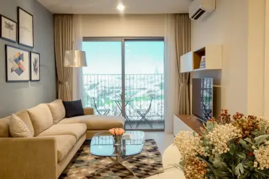
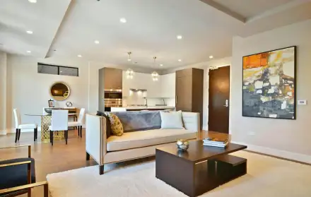
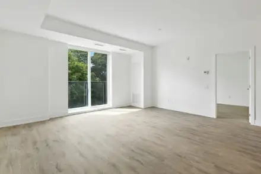

- Brief
- 3 BHK, Vasant Vihar, to ₹1.5 L, from December
- Enquiry
- AB-VV-031, ₹1.45 L/mo
- Visit
- Saturday morning, to confirm
- Callback
- Tomorrow, 10:00 AM
- Found us
- Google search, captured by Mitra
WorkCase study 02Public website
A property site you search the way you talk
A Delhi brokerage’s website, relaunched with its own CRM: search in a sentence, see what’s fair, ask its assistant.
- Status
- Live since the 9 Sep 2026 relaunch
- Timeline
- Built with the CRM, Jun–Sep 2026
- My part
- Product owner of the AI-assisted build. Outside teams I coordinated built the earlier versions.
Names and figures on screen are changed.
Search it the way you’d say it
40 homes, written for this page
Read as
3 homes to rent: 2 verified, 1 awaiting its check

₹1.45 L/moVerified 6 days ago
3 BHK builder floor Vasant Vihar
1,650 sq ft 2nd floor Semi-furnished
AB-VV-031
₹1.2 L/moVerified 12 days ago
3 BHK apartment Vasant Vihar
1,520 sq ft 1st floor Furnished
AB-VV-044
₹1.38 L/moCheck pending
3 BHK builder floor Vasant Vihar
1,800 sq ft Ground floor Unfurnished
AB-VV-018
Runs in your browser. Photos: Unsplash.
What’s there? What’s fair? Who do I talk to?
Renters arrive with three questions and don’t think in dropdowns. Before the relaunch, outside teams built the site and listings lived in spreadsheets. Now the site reads straight from the CRM.
-
Search
A sentence, read as filters
“3 bhk in vasant vihar under 1.5 lakh” becomes a colony chip and two filters. Admins add shorthand like “DC” in the CRM.
-
Landing pages
The search is the landing page
“3 BHK for rent in Chittaranjan Park” has its own page and Google tags: 599 such pages, from live stock.
-
Listing
What the team checked, and when
Verified facts, the building’s other units, and Mitra open on this home.
-
Price guide
What’s fair, colony by colony
Rent and sale bands with gross yield, kept by the team, not averaged from asking prices.
-
On a phone
Signed in with a code, not a password
Saved homes, enquiries, visits and matches, from the person’s CRM record.
A chat, replayed
Mitra runs on rules and the team’s FAQ, not AI. 101 of its 119 chats needed no agent (7 Sep to 6 Nov 2026). This one is written for this page.
ab
Mitrahere to help
- Hi! Renting or buying?
- 3 BHK to rent in Vasant Vihar under 1.5 lakh, from December.
- Three fit; two are verified:
₹1.45 L/mo
AB-VV-031₹1.2 L/moAB-VV-044 - Enquire about AB-VV-031
- Sent. The team will confirm. Want to visit?
- Saturday morning?
- Visit requested: Saturday morning.
- Can someone call me first?
- Callback booked for 10 AM tomorrow, when the team’s in.
- Perfect, thanks
- Anytime. I answer paperwork questions too.
- Lead created: EN-0112
Mitra inbox1 live chatNo agent needed
- KMKavya M.Mitra is replying…New lead9:41 PM
From 26 to 103 search visitors a week.
Every figure dated. The rest, with caveats, is in the drawer.
5South Delhi localities on Google’s first page for rent searches, within 30 daysSep–Oct 2026
43%of engaged visitors came from Google search (375 of 880), up from 22%30 days to 6 Nov 2026
20organic enquiries about a listing, all through Mitra; 11 from Google search9 Sep – 6 Nov 2026
The climb: engaged visitors from Google search, per week
First-party tracker, IST weeks, 14 Sep to 6 Nov 2026; W45 is a part week
Relaunch 9 Sep
- 26
- 34
- 41
- 89
- 77
- 79
- 103
- 47
- W3814 Sep
- W3921 Sep
- W4028 Sep
- W415 Oct
- W4212 Oct
- W4319 Oct
- W4426 Oct
- W45part week
First 30 days
On Google’s first page for rent searches within those 30 days:
- Vasant Vihar
- Safdarjung Enclave
- Greater Kailash 1
- Defence Colony
- Okhla Phase 2
All the numbers (20)
- 9 Septhe site relaunched with the CRM’s production cutover, three months after work began (Jun–Sep 2026)2026
- 6,564active listings on the site, published straight from the CRM6 Nov 2026
- 7,474URLs in the sitemap: 6,561 listing pages, 599 locality × type landing pages, 163 hubs, 77 locality guides, 41 agency pages, 33 journal and site pages6 Nov 2026
- 26 → 103engaged visitors from Google search a week, within two months of the relaunchW38 → W44 · 14 Sep – 1 Nov 2026
- 3 · 26 · 34 · 41 · 89 · 77 · 79 · 103 · 47engaged visitors from Google search, weeks 37 to 45; week 37 (11–13 Sep) and week 45 (2–6 Nov) are part weeksfirst-party tracker, IST weeks · 11 Sep – 6 Nov 2026
- ~27,000Google search impressions in 23 days, about 2.7× the daily rate of the first month after the relaunch (Search Console, includes brand searches)14 Oct – 5 Nov 2026
- 287clicks from Google search in 23 days, against 247 in the 35 days before (Search Console, includes brand searches)14 Oct – 5 Nov 2026 · 9 Sep – 13 Oct 2026
- 6,170pages of the site in Google’s index (Search Console)read 6 Nov 2026
- 1,000+pages with search impressions; Search Console lists 1,000 at most, so the true count may be higher. Average position 8.8 in both periods, weighted by impressions14 Oct – 5 Nov 2026
- Page 1on Google for rent searches in 5 key South Delhi localities, within 30 days of the relaunch (Search Console + manual checks): Vasant Vihar, Safdarjung Enclave, Greater Kailash 1, Defence Colony and Okhla Phase 2Sep–Oct 2026
- 499engaged visitors from Google search since 11 Sep, averaging 5 min 35 s each; 82 landed on listing pages11 Sep – 6 Nov 2026
- 43%of engaged visitors came from Google search (375 of 880), up from 22% in the 30 days to 23 Oct30 days to 6 Nov 2026
- 6,467site searches since 11 Sep; searches naming a colony also feed the verification desk’s list of where to check nextto 6 Nov 2026
- 32website and Mitra leads (22 Mitra property enquiries, 8 Mitra chats, 2 website forms); 30 organic, 12 from Google search; 17 of 32 (53%) now qualified9 Sep – 6 Nov 2026
- 20organic enquiries about a specific listing, all through Mitra on the listing page; 11 arrived from Google search9 Sep – 6 Nov 2026
- 101 of 119Mitra chats never needed an agent (85%); 35 became or joined an enquiry7 Sep – 6 Nov 2026
- 11owner submissions since the form went live: 6 listed, 4 dropped, 1 new; a working supply channel, not a growth claim20 Sep – 6 Nov 2026
- 77locality guides the team writes in the CRM (notes, nearby places and photos); map, prices and live listings are added automatically6 Nov 2026
- 37journal posts published, blog and news6 Nov 2026
- 4listings side by side in Compare, each one Enquire tap away; advisors share shortlists as one linkas built
Counted by the site’s own tracker (live since 11 Sep 2026), which filters known bots, burst crawlers and signed-in staff; Google figures count engaged visitors only. Total visitor, pageview and raw Google visitor counts are not quoted, because automated traffic still inflates them. Lead figures come from the CRM’s read-only query of 6 Nov 2026, about two months after go-live (9 Sep – 6 Nov): across every channel, 147 of 496 new leads were organic by source (not from paid ads or portals; 145 not linked to any ad), and only the 30 organic website and Mitra leads (12 from Google search) are website-attributable. A visitor who googled the site and then used Mitra is credited to Google search, with Mitra as the capture. Every listing is one copy, read straight from the CRM with a publish switch, and a home that is let or sold cannot be published.
It knows who came from Google, and who came from ChatGPT
The search work began around October 2026, so this is about two months of it. The site also counts its own visitors and files each one under the place they came from.
- 1,000+pages of the site shown in Google’s results; 6,170 in its indexSearch Console · 14 Oct – 5 Nov 2026
- 27ksearch impressions in 23 days, about 2.7× the daily rate of the month beforeSearch Console · 14 Oct – 5 Nov 2026
- 8.8average position, across every search the site appeared forSearch Console · 14 Oct – 5 Nov 2026
- __searches where the site ranks in Google’s top 10Search Console · __ – __ 2026
Visitors from AI, growth
- +__%ChatGPT
- +__%Google AI
__ against __ 2026 · growth only, the counts are small
Six sources, and every visitor in exactly one
How the site’s own tracker files a visit
- Google searchunpaid clicks from Google’s results
- AI assistantsChatGPT and Perplexity
- Social mediaInstagram, Facebook and YouTube, unpaid
- Agent shareslinks the team sent to clients
- Directtyped in, bookmarked, or no source given
- Otherpaid ads, other search engines, messaging, email
- ChatGPT is a source, not a mystery. A visit that arrives from ChatGPT or Perplexity is filed under “AI”, beside Google, and drawn as its own line on the traffic chart. Since 18 Sep 2026.
- People, not bots. AI bots that only read the pages are filtered out with the other bots, so the AI line counts people who clicked through.
- It follows the visitor to the enquiry. In the CRM, an enquiry’s “How they found us” names ChatGPT when that is where the person came from.
- Built to be found there. New and changed pages are sent every night to the search index that ChatGPT’s search reads.
- What 8.8 means. It is an average weighted by impressions, brand searches included. It does not put every page on Google’s first page.
Try its public cousin
The listings live in a CRM behind a staff login. Fieldwise is one I built in the open.
Fieldwise, a brokerage CRM for the field
- Briefs in plain words
- A Verified badge on a 30/45-day clock
- Matches from live stock
How it was built
I set the requirements, made the product calls and directed AI coding tools.
- Laravel
- Blade
- Livewire
- MySQL
- Meta Pixel + CAPI
- Search Console API
- IVR + SMS via the CRM
- Requirements and product callsWhat the desk and visitors needed.
- An AI-assisted buildI direct AI coding tools and test every change.
- Shipped with the CRMOne codebase, live at the 9 Sep 2026 cutover; I ran go-live and training.
- Run from the CRMListings, homepage, shorthand, Mitra’s answers and guides: no developer needed.